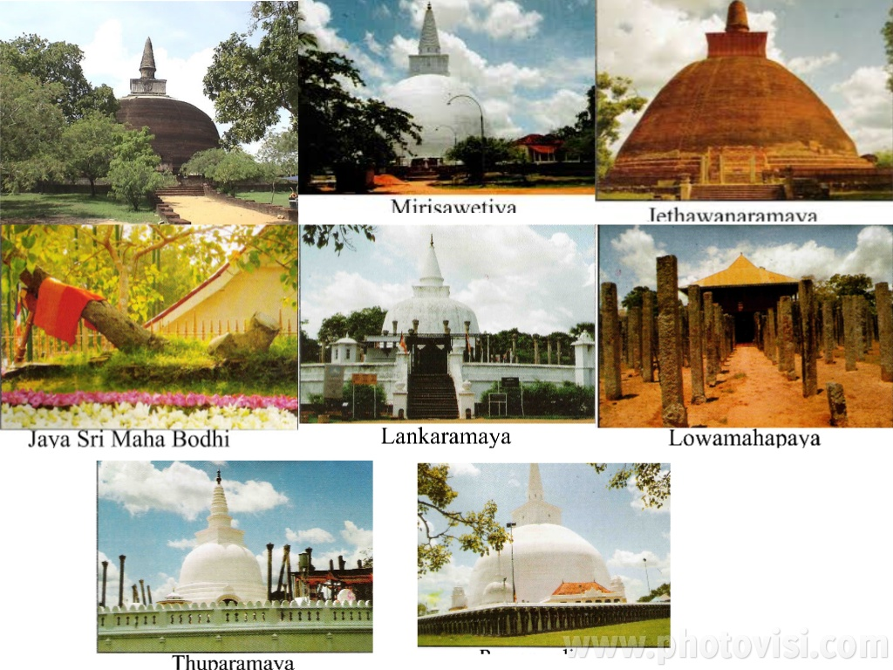
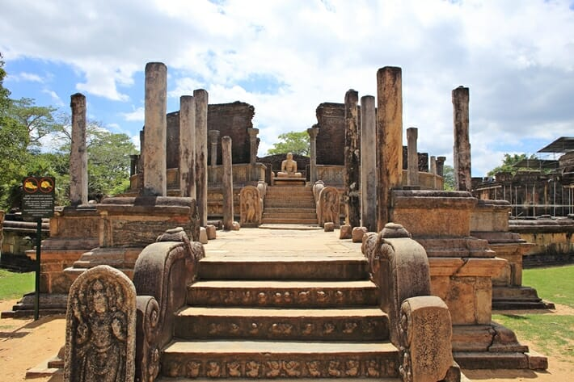
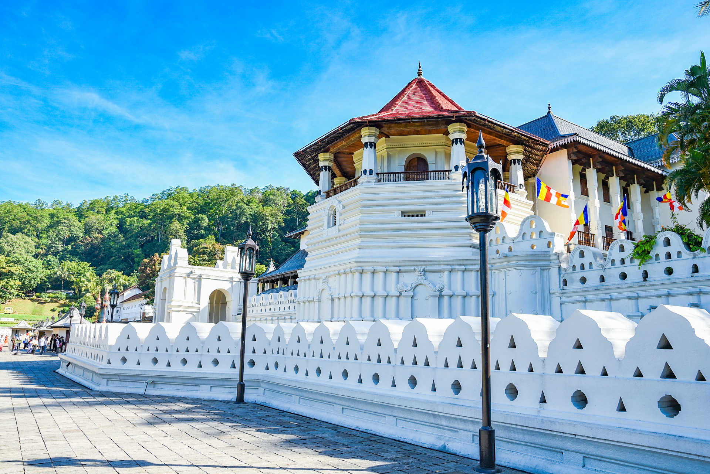
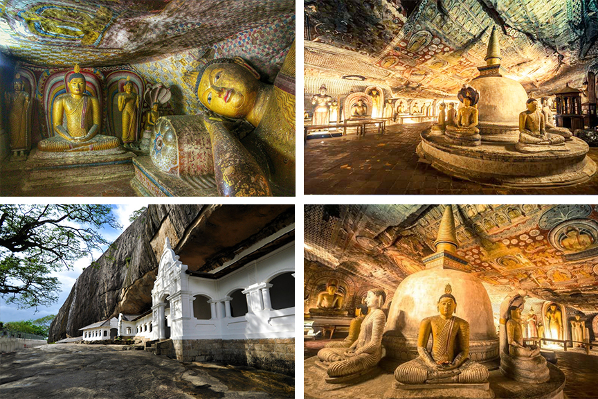
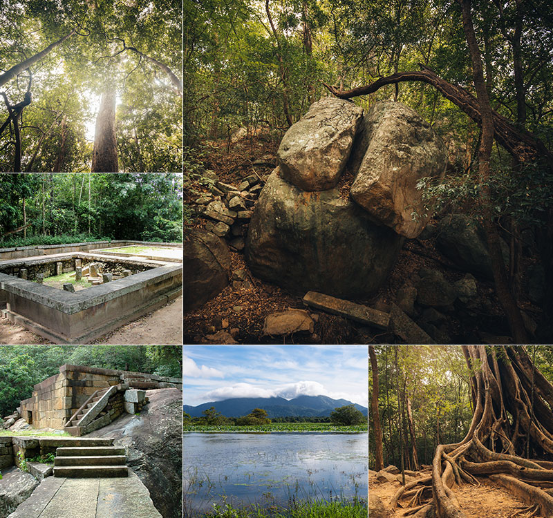
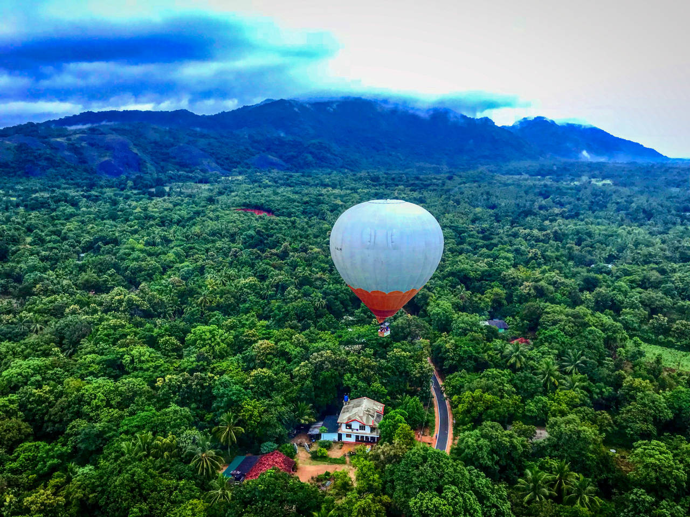

Cultural Traingle

The sacred city of Anuradhapura is an ancient capital in Sri Lanka. This city is a living heritage site and still a pilgrimage
destination for Buddhists around the world as it was established around a branch of the Buddha’s fig tree. Anuradhapura was a capital
city that flourished for more than 13 centuries, but was abandoned after an invasion, after which the capital was shifted to Polonnaruwa.
 Sigiriya Rock Fortress is an amazing ancient palace that has been designated as a UNESCO World Heritage Site.
Sigiriya (AKA “Lion Rock”) is approximately 3 hours from Colombo, and consists of the ancient Sky Palace that sits atop
of a massive 200-metre-tall rock, a mid-level terrace that features the Lion Gate (sadly, the head is no longer) and is surrounded by
beautiful gardens and moats on the lower levels.
Sigiriya Rock Fortress is an amazing ancient palace that has been designated as a UNESCO World Heritage Site.
Sigiriya (AKA “Lion Rock”) is approximately 3 hours from Colombo, and consists of the ancient Sky Palace that sits atop
of a massive 200-metre-tall rock, a mid-level terrace that features the Lion Gate (sadly, the head is no longer) and is surrounded by
beautiful gardens and moats on the lower levels.

Polonnaruwa is another ancient city in Sri Lanka and served as the capital city for nearly 2 centuries between the 11th and 13th
centuries AD and is an incredible day trip destination in Sri Lanka. During its time as a capital, Polonnaruwa was ruled by the Kings
Vijayabahu I, Parakramabahu the Great and Nissanka Malla – all 3 of these rulers devoted themselves to fostering agriculture, religion and social
development and the kingdom prospered under their reign during this era

Polonnaruwa is another ancient city in Sri Lanka and served as the capital city for nearly 2 centuries between the 11th and 13th
centuries AD and is an incredible day trip destination in Sri Lanka. During its time as a capital, Polonnaruwa was ruled by the Kings
Vijayabahu I, Parakramabahu the Great and Nissanka Malla – all 3 of these rulers devoted themselves to fostering agriculture, religion and social
development and the kingdom prospered under their reign during this era
 This is a mountain peak near Anuradhapura which is also the site where the presence of Buddhism was inaugurated in Sri Lanka. Mihintale is currently a much visited
pilgrimage site where several religious monuments and abandoned structures are available for the public to venerate. Mihintale consists of a number of characteristics
depicting a monastery of that particular period. The foot of Mount Mihintale consists of the ruins of a hospital, medical bath and stone inscriptions. Between the hospital
and the steps that lead to the rock are the ruins of a huge monastery. The stairway consists of 1840 steps which have been carved in granite leading to the summit.
The Kantaka Cetiya is located at the summit while the Refectory is situated at the end of the third flight of steps. Other locations in Mihintale include the Ambasthala Dagaba,
the Cave of Arahat Mahinda, the Maha Stupa, Aradhana Gala, Kaludiya Pokuna, Naga Pokuna and Singha Pokuna.
This is a mountain peak near Anuradhapura which is also the site where the presence of Buddhism was inaugurated in Sri Lanka. Mihintale is currently a much visited
pilgrimage site where several religious monuments and abandoned structures are available for the public to venerate. Mihintale consists of a number of characteristics
depicting a monastery of that particular period. The foot of Mount Mihintale consists of the ruins of a hospital, medical bath and stone inscriptions. Between the hospital
and the steps that lead to the rock are the ruins of a huge monastery. The stairway consists of 1840 steps which have been carved in granite leading to the summit.
The Kantaka Cetiya is located at the summit while the Refectory is situated at the end of the third flight of steps. Other locations in Mihintale include the Ambasthala Dagaba,
the Cave of Arahat Mahinda, the Maha Stupa, Aradhana Gala, Kaludiya Pokuna, Naga Pokuna and Singha Pokuna.

The city is well known to include the best preserved as well as the largest cave temple complex in the island. Known as the Dambulla Cave Temple, the rock towers
160 meters over the surrounding plains of the Matale District. So far, there are a number of 80 documented caves belonging to the network while the major attractions of
the cave temple spread over 5 caves where devotees are allowed to visit. These caves boast of paintings and statues that depict Lord Buddha and his teachings. The murals
cover an estimated area of 2100 m2.

This is a mountain which consists of the ruins of an ancient Buddhist monastery. These ruins as well as the rock inscriptions that are found in the monastery date back to the 1st century BC.
Standing 766 metres above sea level and about 600 meters above the surrounding flat land, Ritigala is known to be the highest mountain in the Northern part of Sri Lanka. Due to its height,
many locations including Sigiriya, Mihintale and Dambulla are visible at a distance. The significance of Ritigala is its wet micro climate while the mountainous
area experiences the highest rainfall of the entire dry zone during the North East Monsoons. There are many legends surrounding Ritigala while the Legend of Lord Hanuman
being one of them. The ruins of the monastery are found along the Eastern side of the mountain which covers an area of 59 acres. There are also a few stone bridges, raised
platforms and courtyards.

The climate in Dambulla – Kandalama is exceptional for flying balloons, due to its extremely calm and predictable nature.
Sri Lanka Balloon Rides generally take place in the early morning (because the weather is more stable), and the average distance we cover, in accordance with the wind speed and direction,
is anywhere from one to ten miles.The height at which we fly will vary from tree top level – where we enjoy contour flying at low level to several thousand feet up: the perfect vantage point to
observe the majesty of Dambulla – Kandalama area.
Contact Us: Follow us on:
Mobile: Whatsapp or Viber


+94586791235
+94586791235
+94586791235
*Product Disclaimer : Information on listed products and services are provided by the operator and were correct at the time of publishing. Please visit the operator’s website for further information.
Tour Sri Lanka copyright @ 2020
| |